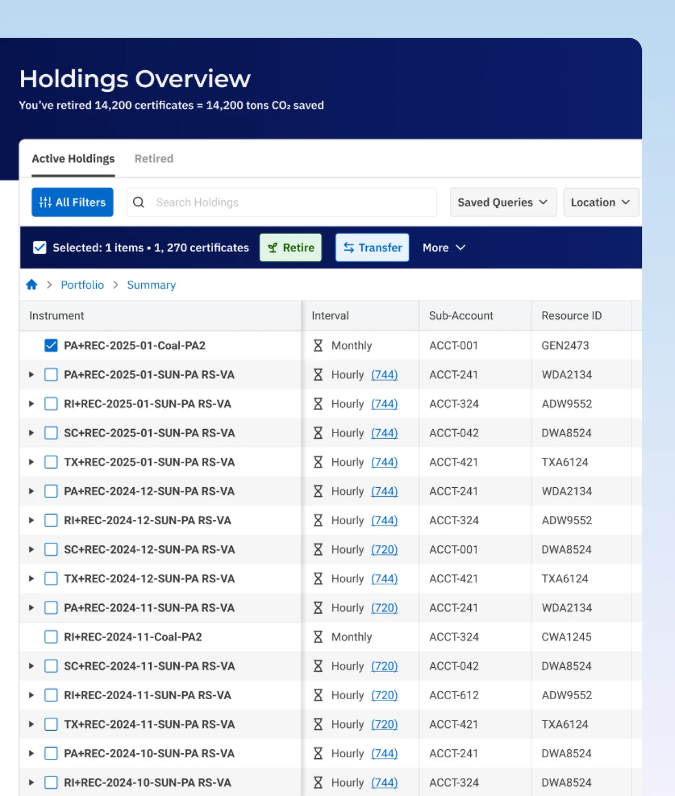
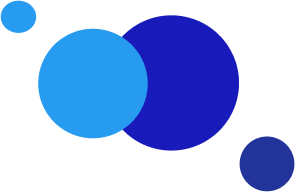

I’m Michał Sadowski · Product Designer · B2B SaaS
I design for the
messy, data-heavy middle.
Dashboards, data tables and workflows people live in for 8 hours a day.End-to-end: discovery, flows, design system, shipped UI.
-

01Making the uncertain feel clear, safe and trustworthy
A redesign of a 15-year-old renewable-energy certificate registry - its portfolio and its retirement flow - commissioned by one of the world’s largest technology companies. Monthly and hourly holdings became one workspace, actions start from the selected holdings, and an irreversible retirement ends on an explicit, unmistakable result.
Product Designer · end-to-end, discovery to shipped UI · ~6 months
-
Project visual — placeholder02
Putting live commodity data inside Excel
An Excel add-in designed from the ground up so analysts can pull market data without leaving their spreadsheet - solved inside a tightly constrained sidebar.
End-to-end designer, research to shipped UI
How I work
-
01
Understand the domain first
I start with how the work actually happens - the rules, the edge cases and where people lose time, not with screens.
-
02
Get evidence before opinions
Interviews, observation and support signals. I want to prove the problem is real before I agree to design anything.
-
03
Design the smallest confident step
Interaction first, visual layer second. I explore quickly, converge deliberately, and document the reasoning behind each decision.
-
04
Ship, then stay close
I work with engineering through states and edge cases, because a design only counts once it holds up in the product.
That’s me

I design software where the domain is complex, the data is dense and the user cannot afford a guess.
When I’m not designing, I play guitar and spend my free time on board games and video games - I’m drawn to problems that reward patience and clear thinking.
Companies I’ve designed for
add file
add file
add file
add file
add file
Let’s work together
I’m open to UX/UI roles in enterprise and data-heavy products. The fastest way to reach me is email.
sadowskidesign@gmail.com